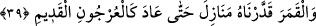

İstivâ çizgisinde (ekvatorda) gece ve gündüz sürekli eşit olur.
Şeyh Ebû Hâmid (r.a.)’a Bulgar beldelerinde (kutuplara yakın yerlerde) nasıl namaz
kılınacağını sordular. Çünkü onların bulunduğu yerde güneş ancak akşam ve yatsı arası
kadar kısa bir zaman batar, sonra doğar. O da: “Onların oruçları ve namazları
kendilerine en yakın beldeye göre ayarlanır.” diye cevap verdi.
Fukahânın çoğuna göre en doğrusu onların gece ve gündüzü belirlemeleri ve saatlere
göre ayarlama yapmalarıdır. Nitekim Peygamberimiz (s.a.) deccal hakkında: “O zaman
bir gün bir sene, bir gün bir ay, bir gün bir hafta gibi olacaktır. Onun zamanında
oruç ve namaz (vakti) takdir edilir.”[138] buyurmuştur.
“İşte bu,” anlamakta akılların ve idrâklerin şaşkınlığa düştüğü hayret verici
hikmetleri içinde bulunduran güneşin bu benzersiz akıp gitmesi “azîz” kudretiyle
kudrete konu olan her şeye gâlib “ve alîm” ilmi bilinen her şeyi kuşatmış “olan
Allah’ın takdiridir.”
el-Müfredât’ta der ki: “__WORD__ bir şeyin kemmiyyetini beyan etmektir. Allah’ın eşyâyı
takdiri ise iki şekilde olur: Biri kudret vermekledir. Diğeri ise hikmetinin gereği olarak
eşyayı özel bir miktar ve özel bir şekil üzere yaratmasıdır. Çünkü Allah’ın fiili iki
çeşittir: Birisi bilfiil îcad/var ettiğidir. Allah’ın bilfiil îcâd etmesinin mânâsı, kâmil
olarak bir defâda benzersiz şekilde yaratmasıdır. Böyle yaratılan şeyi Allah yok etmeyi
veya değiştirmeyi murâd edene kadar kevn ve fesad (bir taraftan var olma, bir taraftan
mahvolma) ârız olmaz. Bunlara örnek gökler ve onlarda bulunan şeylerdir. Diğeri ise
asıllarını bilfiil cüzlerini ise bilkuvve var ettikleridir. Onları o şekilde takdir etmiştir ki
onlar hakkında takdir ettiğinden başka bir şey hâsıl olmaz. Meselâ Allah Teâlâ hurma
çekirdeğinde elma veya zeytin değil hurma ağacının bitmesini takdir etmiştir. Yine insan
menîsinden diğer canlılar değil, insan olmasını takdir etmiştir.
Şu halde Allah’ın takdîri iki şekilde olur: Birincisi Allah’ın bir şeyle ilgili olarak
böyle olur şöyle olmaz diye zorunlu ya da mümkün olarak hükmetmesidir. İkincisi ise o
şeye güç/kudret vermesiyledir.
Âyette Allah’ın nurunun güneşine işâret vardır. Çünkü bu güneş de kendisi için
belirlenen yerde akar gider. Bu ise içinde Allah’ın nurunun serpintilerinin yerleştiği
kalbdir. “İşte bu,” belirlenen yer, “azîz” kendisine ancak kendisiyle ulaşılabilen “ve
alîm olan” risaletini nereye koyacağını çok iyi bilen “Allah’ın takdîridir.” Her kalb bu
nûrun yerleşmesi için uygun değildir. Öyleyse kalbi buna hazırlamak, latîf hâle gelene,
kevn ve fesadın karanlıklarıyla ilgili her türlü ağırlık kalbden zâil olana kadar kalbi
parlatmak lâzımdır.
İlahi nurların cevheri/incisi için pak gönüller sadef olmuştur